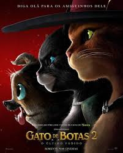
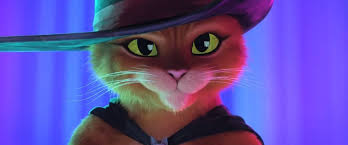
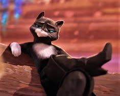
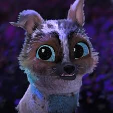
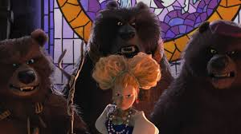
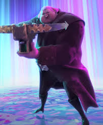
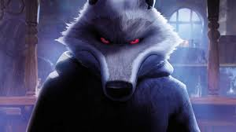
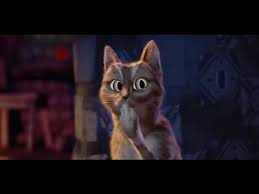
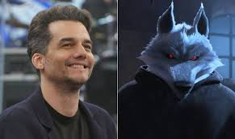

Puss in Boots the Last Wish ou Gato de Botas O Último pedido è um filme da Dreamworks que estreiou o filme no dia 5 de janeiro de 2023. Trouxe para nós fã de animações uma história riquíssima em aventura, comédia, drama e fantasias dos contos de fadas.
Estes filme conta com a presença de personagens que não tem como esquecer dos contos de fadas, sendo assim, contendo a presença do Gato de Botas, Kitty Pata-Mansa, Perrito, Cachinhos Dourados e a família urso, Jack horner e o mais marcantes o Lobo/Morte. Além de ter colocado o Ohhh Cat do primeiro filme do gato de botas, como um extra.
      Umas das melhores curiosidades é saber que o ator brasileiro Wagner Moura, tbm conhecido como Capitão Nascimento de Troda de Elite, é responsável pelo voz do Lobo.
Por mais que gatos de botas seja uma animação, atraiu um público de todas as idades, chegando a ser o primeiro lugar na lista de filmes mais visto no país. Rendendo quase de 5 milhões de reais para a produção.